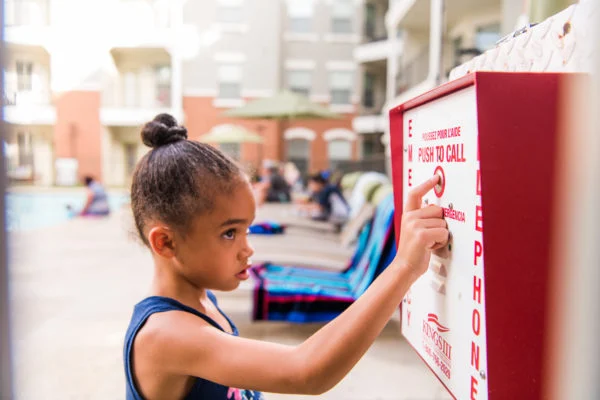

Eliminate Phone Lines. Go Improve Tenant Experience. Enhance
On-Site Life Safetly. Expert Instllation. And Liferime Warranty
INDUSTRY LEADING WIRELESS PHONE LINES
Voice Link and AT&T FirstNet® Priority Cellular offer a standard
voice telephone line replacement service for emergency
communications for new and legacy life safety equipment.
RELIABLE EMERGENCY PHONES WITH PRIORITY ACCESS
Ideal for elevators, areas of rescue, two-way communication,
emergency, and pool phones. Priority cellular access, monitored
phone line, and robust hardware bundled into one. Provides a secure
direct connection over an LTE cellular network. Connected to a UL
Listed Central Station for enhanced reliability.
AT&T FIRSTNET® PRIORITY DATA SERVICE
At the forefront of innovation, we are dedicated to pioneering
safety solutions for a more secure future. Our commitment to
alternatives for traditional emergency phone lines reflects our
vision to enhance safety standards. By embracing cutting-edge
technology, we ensure emergency communication remains robust,
accessible, and reliable. Your safety is our priority, and we
continually adapt to meet the evolving needs of a changing
landscape.
0%
ELEVATE SYSTEMS TODAY!
Elevate Systems®
What is Elevate Systems and Voice Link?

Wireless Phone Lines for Life Safety Systems
As traditional phone lines phase out, Elevate Systems offers a
code-compliant and cost-effective cellular solution. By switching to
our service, you benefit from substantial monthly savings while
maintaining the utmost safety and reliability. Our units are
equipped with cutting-edge battery backup units essential during
power outage events.
Ensuring a Dependable Response for Emergencies
Elevator malfunctions are practically unavoidable, given there are
approximately 20 billion annual elevator trips in the United States
alone. Often, these malfunctions result from simple wear and tear
while other times they stem from errors in the elevator’s internal
diagnostic system which require the assistance of a professional
technician. Regardless of the underlying cause, being trapped in an
elevator is a harrowing and unsettling experience, sometimes even
posing safety risks and potential health concerns.
Your Trusted Partner for Wireless Safety Phones
At Elevate Systems, we’re not just about installing wireless safety
phones. We are dedicated to providing you with a comprehensive
solution that prioritizes safety, reliability, and seamless support.
Our unwavering commitment to your peace of mind is backed by our
partnership with WHIRC, a leading name in emergency phone
monitoring. We offer 24/7/365 monitoring coverage, ensuring the
quickest and most dependable service in the industry, all while
fostering collaborative relationships with our clients. With Elevate
Systems, you can expect not only top-tier monitoring but also
detailed reporting and seamless integrations.
Five Diamond Monitoring Excellence
Elevate Systems proudly partners with WHIRC, a “Five Diamond
Monitoring Center” certified by the industry’s highest standards.
Our dispatchers are not just trained; they are certified experts in
emergency response and customer service. They receive regular
training to stay up to date with the latest alarm technology to
ensure the industry’s fastest and most reliable service. We
continually monitor response times and call-answering efficiency to
ensure that our customers receive top-notch service.
UL Certified Excellence in Monitoring
Our UL-certified monitoring center at Elevate Systems surpasses the
strictest requirements for redundancy, equipment, alarm processing,
and training. Our dispatchers are dedicated to provide the most
dependable, timely, and personalized service in the industry. When
you choose Elevate Systems, you are extending your business’
commitment to safety. Our trained and certified dispatchers are
proud to serve our customers with the utmost professionalism and
with the goal of exceeding the high expectations set by your
business. Your safety is our top priority.